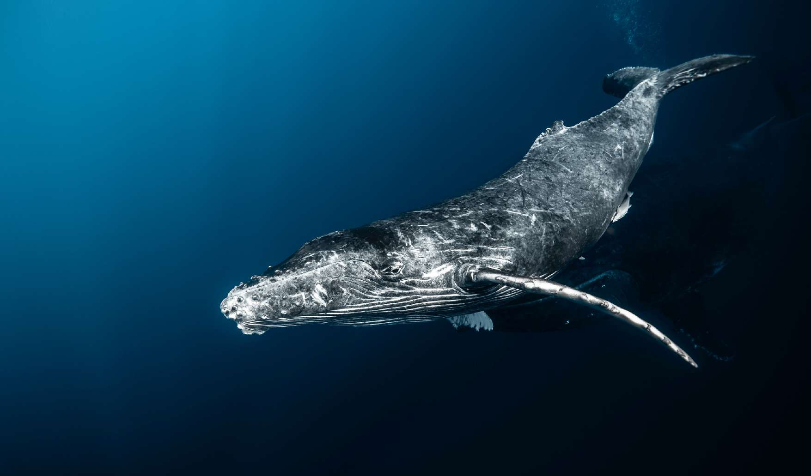

Whale Swim Expedition
Tonga with Brooke Pyke: Swim with Humpback Whales
Eight days in Vava'u with award-winning underwater photographer Brooke Pyke. A small group of seven guests shares five full private-boat days dedicated to responsible humpback whale swims, ocean confidence, image-making and the slow rhythm of island life.